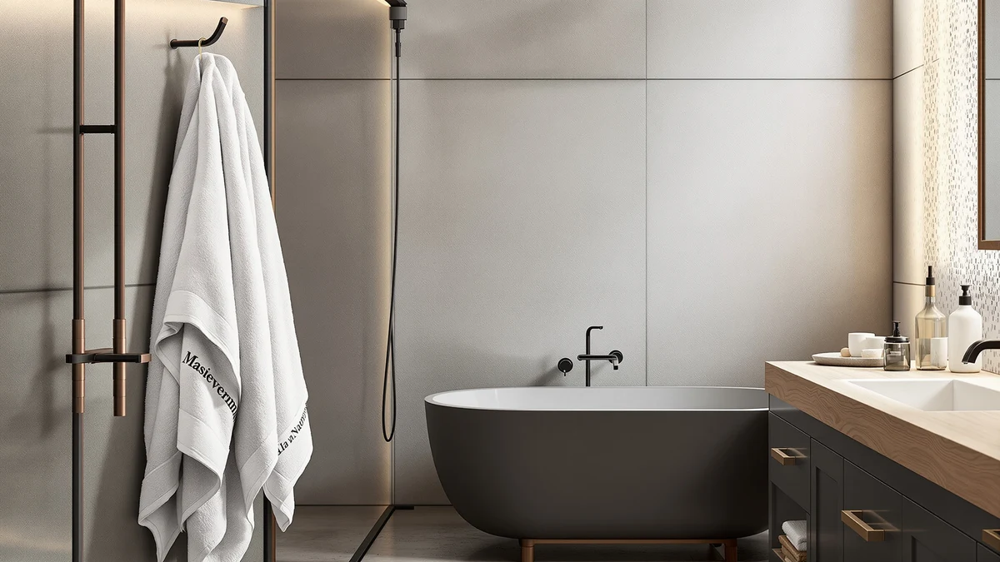

Best Personalized Bath Towels with Names (2026)
Prices and picks verified as of September 2026. Independent, reader-supported reviews.


Quick Answer
The Qute Home Personalized Custom 3-Piece is the clearest pick among the best personalized bath towels with names because it ships pre-monogrammed and its 100% cotton construction matches what we'd expect from a $39.99 set. If you'd rather buy a blank set and add your own embroidery or iron-on lettering, the American Soft Linen Luxury 6 and Utopia Towels 8 Piece Luxury both take personalization well without the markup of a pre-customized set.
Our pick: Qute Home Personalized Custom 3-Piece — $39.99 Check Price on Amazon
Bottom line: our top pick is the Qute Home Personalized Custom 3-Piece Towel Set at $39.99. The best budget option is the Utopia Towels 8 Piece Luxury Towel Set at $32.99.
Things to Know Before You Buy
- "Personalized" towels fall into two categories: sets that arrive pre-monogrammed with a name, like the Qute Home 3-Piece, and premium blank sets that hold up well if you add your own embroidery or iron-on letters later.
- 100% cotton dominates this comparison; the NALIVO set is the microfiber outlier, and microfiber generally takes embroidered or heat-transferred names less cleanly than woven cotton terry.
- Set sizes range from the 3-piece Qute Home bundle to the 8-piece Utopia Towels and Luxury White sets, so check piece count against how many towels you actually need before comparing sticker prices.
- Only the American Soft Linen Luxury 4 lists exact dimensions, 27x54 inches, among the sets we compared. Measure your towel bar or linen closet before ordering a set that doesn't publish sizing.
- Prices here run from $32.99 for the Utopia Towels 8 Piece Luxury to $55.98 for the NALIVO Extra Large Bath Towel, so cost per towel varies more than the headline price suggests.
Finding the best personalized bath towels with names means deciding upfront whether you want a set that arrives already monogrammed or a high quality blank set you can personalize yourself. That distinction matters more than most buyers expect, because it changes what you should actually be comparing: pre-printed convenience against material quality for DIY embroidery.
We compared seven sets ranging from a pre-customized three-piece bundle to premium cotton and microfiber options that owners commonly repurpose for embroidery or iron-on lettering. Among them, the Qute Home Personalized Custom 3-Piece is the only set built specifically for adding a name, which makes it the default pick if that is the whole point of your purchase.
Owners who already have a monogramming machine or plan to use an embroidery service often skip the markup on pre-customized towels entirely and buy a well-made blank set instead. We break down material, set size, and price for each option below so you can match a towel to the type of personalization you actually want.
Why You Should Trust Us
Best Bath Towels is edited by Ilane Tall, who researches and compares home textile products for a living. We do not run a physical testing lab, and we do not claim to have used every towel on this list in our own bathrooms. Instead, we research manufacturer specifications, compare verified owner reviews, and track pricing across listings to find the best personalized bath towels with names for different budgets and needs. When a claim in this article is not backed by a spec sheet or a pattern in verified reviews, we say so.
How We Picked
We started by identifying which sets on the market are explicitly built for name personalization versus which ones are simply well-reviewed cotton or microfiber towels that owners repurpose for monogramming. We prioritized listings with material information the manufacturer discloses, such as cotton content or fiber type, current Amazon pricing, and set sizes that cover a range of household needs, from a compact 3-piece bundle to an 8-piece set. We excluded listings missing basic material specs, since a towel meant for embroidery or heat-transfer personalization needs a fiber content buyers can verify.
How We Compared
For each set, we compared manufacturer-listed material, current Amazon pricing, set size, and any published dimensions, then weighed those specs against whether the towel arrived pre-personalized or needed a name added afterward. We cross-checked pricing at the time of publication and flagged listings where dimensions or piece counts were unclear. We did not personally handle or monogram any of these towels; our comparisons are based on published specifications and patterns in verified owner reviews rather than firsthand testing.
Our Picks

Qute Home Personalized Custom 3-Piece
What we like
- Arrives with the name or monogram already added, so there is no separate embroidery step
- 100% cotton construction matches the material used across most of the sets we compared
- Three-piece set works well as a gift without committing to a full 8-piece bundle
Flaws but not dealbreakers
- Qute Home does not publish exact towel dimensions, so you're relying on the product photos for sizing
- A three-piece set is limited if you need towels for a full household rather than a gift
| Material | 100% cotton |
| Size | — |
The Qute Home Personalized Custom 3-Piece is the only set in this comparison built around name personalization rather than treating it as an afterthought. At $39.99, it sits between the $32.99 Utopia Towels 8 Piece Luxury and the $55.98 NALIVO Extra Large Bath Towel, and its 100% cotton material lines up with the fiber content used across most of the sets on this list.
Because the name goes on before the towel ships, you skip the separate embroidery cost and turnaround time that come with personalizing a blank towel yourself. The tradeoff is that Qute Home doesn't list exact dimensions the way the American Soft Linen Luxury 4 does, so buyers comparing towel size across brands need to rely on the product photos rather than a spec sheet. For a gift-focused purchase where the name matters more than towel size, that tradeoff is reasonable; for daily-use towels where fit on a towel bar is the priority, check the listing photos closely before you buy.

Luxury White Bath Towel Set
What we like
- Eight-piece set covers a full household without buying towels twice
- Solid white cotton is one of the easiest backgrounds for embroidery, iron-on letters, or fabric-paint names to stand out against
- Priced the same as the pre-personalized Qute Home set but covers more than double the towel count
Flaws but not dealbreakers
- White towels show stains and discoloration faster than colored sets, so they need more careful laundering to stay looking new
- It doesn't come with personalization, so you're responsible for sourcing your own monogramming or embroidery
| Material | 100% cotton |
| Size | 8 Pieces Towel Set |
The Luxury White Bath Towel Set from White Classic is an 8-piece 100% cotton bundle priced at $39.99, the same price as the pre-personalized Qute Home set but with more than double the towel count. It isn't sold as a personalized product, so if a name is the point of your purchase, you'd add it yourself through an embroidery service, iron-on letters, or a monogramming machine.
Solid white cotton is a practical choice for that kind of DIY personalization, since embroidered or heat-transferred names show up clearly against a plain background, unlike a printed pattern that competes with lettering for attention. The obvious downside of an all-white set is upkeep: white towels reveal soap residue, mildew spotting, and general graying faster than a darker set, so owners who go this route should expect to wash on a dedicated bleach-safe cycle more often than they would with a colored towel.

American Soft Linen Luxury 6
What we like
- Six-piece cotton set undercuts the price of the Luxury White Bath Towel Set while covering more towels than the Qute Home 3-piece
- 100% cotton construction is consistent with the material owners typically look for when adding embroidered names later
- Mid-size set count fits smaller households that don't need a full 8-piece bundle
Flaws but not dealbreakers
- American Soft Linen doesn't list towel dimensions on this listing, similar to the Qute Home set
- Like the other non-personalized sets here, you're responsible for adding any name yourself
| Material | 100% cotton |
| Size | 6 Pc Towel Set |
American Soft Linen's Luxury 6 is a six-piece 100% cotton set priced at $35.99, positioning it between the smaller Qute Home 3-piece bundle and the larger 8-piece sets from White Classic and Utopia Towels. As with most of the sets on this list aside from the Qute Home, it ships without any personalization, so a name would need to be added separately.
The six-towel count is a middle ground for households that find an 8-piece set excessive but want more coverage than a 3-piece gift set provides. Cotton remains the material owners most often recommend for embroidered or monogrammed names because it holds stitching without the fraying that can show up on synthetic blends, and American Soft Linen's listing matches that fiber content. The set's main limitation compared to the American Soft Linen Luxury 4 is that it doesn't publish exact towel dimensions, so buyers who need towels to fit a specific bar or shelf should confirm sizing before ordering.

Utopia Towels 8 Piece Luxury
What we like
- Lowest price in this comparison at $32.99 while still delivering an 8-piece cotton set
- Matches the same 8-piece count as the pricier Luxury White Bath Towel Set at roughly 17 percent less
- 100% cotton material is consistent with what owners look for when planning to embroider or iron on a name
Flaws but not dealbreakers
- At this price point, Utopia doesn't publish detailed dimensions or weight specifications
- It doesn't include personalization, so pairing it with a name requires a separate embroidery step or kit
| Material | 100% cotton |
| Size | 8 Pieces Towel Set |
The Utopia Towels 8 Piece Luxury set is the least expensive option we compared at $32.99, and it still matches the 8-piece count of the pricier $39.99 Luxury White Bath Towel Set. Both are 100% cotton, which makes Utopia's set roughly 17 percent cheaper for the same towel count and the same base material.
That price gap makes it a reasonable choice for buyers who plan to personalize only a towel or two, since spending less on the bulk set leaves more budget for embroidery or a monogramming service on the pieces that matter most. Utopia's listing doesn't go into the same level of material or dimension detail as some competitors, so buyers who care about exact weight or size specifications may want to compare it against the American Soft Linen Luxury 4, which does list its dimensions.

American Soft Linen Luxury 4
What we like
- The only listing in this comparison with published dimensions, 27x54 inches, useful for planning where a name or monogram will sit
- 100% cotton at the same price as the Luxury 6 from the same brand, giving buyers a size option within one product line
- Standard bath towel dimensions make it compatible with most embroidery hoops and monogramming templates
Flaws but not dealbreakers
- Priced the same as the 6-piece Luxury set from the same brand while covering fewer towels, since this is the four-piece version
- Like the rest of the non-personalized sets here, no name or monogram is included
| Material | 100% cotton |
| Size | 27x54" Bath Towel Set |
American Soft Linen's Luxury 4 stands out in this comparison for one specific reason: it's the only listing that publishes exact dimensions, 27 by 54 inches per towel. At $35.99, it costs the same as the brand's own 6-piece Luxury set but covers four towels instead of six, so the price difference between the two comes down entirely to piece count rather than material or size.
For anyone planning to add a personalized name through embroidery or a heat-transfer service, knowing the exact towel dimensions in advance matters more than it does for a plain purchase, since placement of a monogram or name typically depends on the towel's folded size. The 27x54 inch dimension is a standard bath towel size, which means it should work with most home embroidery hoops or professional monogramming templates without special sizing. Buyers who don't need that level of detail and want more towels for the same price may find the 6-piece Luxury set from the same brand a better fit.

NALIVO Extra Large Bath Towel
What we like
- Microfiber dries noticeably faster than the cotton sets on this list, which matters more for daily use than for a name-focused purchase
- Six-piece set count sits between the smaller Qute Home and Luxury 6 options
- Extra-large sizing suits buyers who want oversized towels regardless of personalization plans
Flaws but not dealbreakers
- At $55.98, it's the most expensive set in this comparison, roughly 70 percent more than the Utopia Towels 8 Piece Luxury
- Microfiber doesn't hold embroidery stitching or heat-transfer lettering as cleanly as the cotton sets here, so it's a weaker choice if adding a name yourself is the goal
| Material | Microfiber |
| Size | 6Piece Towel Set |
The NALIVO Extra Large Bath Towel set is the outlier in this comparison on two counts: it's the only microfiber set among six cotton options, and at $55.98 it's the most expensive set we compared, roughly 70 percent above the $32.99 Utopia Towels 8 Piece Luxury.
Microfiber's main advantage over cotton is drying speed, which matters if quick turnaround between showers is a bigger priority than personalization. It's a weaker fit if your goal is adding a name yourself, since embroidery and iron-on lettering typically hold better on woven cotton terry than on synthetic microfiber, where stitching can pucker the fabric or heat transfers can struggle to bond evenly. Buyers set on a microfiber towel who still want a name on it are better served looking for microfiber towels sold with personalization already applied, since NALIVO's listing doesn't include that option.

Cotton Paradise 100% Cotton Turkish
What we like
- Turkish cotton is generally prized for a denser, more absorbent weave than standard cotton terry
- Six-piece set at the same $39.99 price as the pre-personalized Qute Home 3-piece, offering double the towel count if you don't need pre-added personalization
- 100% cotton construction is well suited to embroidery or monogramming if you plan to personalize it yourself
Flaws but not dealbreakers
- Priced the same as sets with more published detail, such as the Luxury 4's exact dimensions, while Cotton Paradise's listing doesn't specify towel size
- It doesn't include personalization, so buyers focused specifically on a pre-added name should look at the Qute Home set instead
| Material | 100% cotton |
| Size | 6 Piece Towel Set |
Cotton Paradise's 100% Cotton Turkish set is priced at $39.99, matching the Qute Home Personalized Custom 3-Piece exactly, but delivers six towels instead of three and skips the pre-added personalization. Turkish cotton has a reputation among owners for a denser, softer weave than standard terry cotton, though this listing doesn't include separate density or GSM figures to confirm that directly.
For buyers weighing this against the Qute Home set, the decision comes down to what matters more: getting a name already on the towel, or getting twice the towel count at the same price and adding personalization yourself. Since it's 100% cotton, Cotton Paradise's set should take embroidery or monogramming about as well as the other cotton options on this list. The main gap in the listing is towel dimensions, which aren't published here the way they are for the American Soft Linen Luxury 4, so size-conscious buyers may want to compare listings directly before choosing between the two.
Quick Comparison
| Product | Material | Price | Rating | Best for | Get it |
|---|---|---|---|---|---|
| Qute Home Personalized Custom 3-Piece | 100% cotton | $39.99 | 4 | Pre-personalized gift sets | View on Amazon → |
| Luxury White Bath Towel Set | 100% cotton | $39.99 | 4 | Blank set for DIY monogramming | View on Amazon → |
| American Soft Linen Luxury 6 | 100% cotton | $35.99 | 4 | Mid-size cotton set for embroidery | View on Amazon → |
| Utopia Towels 8 Piece Luxury | 100% cotton | $32.99 | 4 | Lowest price per towel | View on Amazon → |
| American Soft Linen Luxury 4 | 100% cotton | $35.99 | 4 | Only set with published dimensions | View on Amazon → |
| NALIVO Extra Large Bath Towel | Microfiber | $55.98 | 4 | Fastest-drying, priciest option | View on Amazon → |
| Cotton Paradise 100% Cotton Turkish | 100% cotton | $39.99 | 4 | Turkish cotton, DIY personalization | View on Amazon → |
Do personalized bath towels with names cost more than regular towel sets?
Not necessarily.
Can you add a name to a towel yourself instead of buying a pre-personalized set?
Yes.
The Competition
The Luxury White Bath Towel Set and Utopia Towels 8 Piece Luxury both offer more towels for a similar or lower price than the Qute Home pick, but neither is sold as a personalized product, so we didn't lead with them for shoppers specifically searching for the best personalized bath towels with names. They're worth a look if you're comfortable handling embroidery or monogramming yourself.
The NALIVO Extra Large Bath Towel is the priciest set we compared at $55.98, and its microfiber material doesn't take embroidery or iron-on lettering as cleanly as the cotton sets here, which is why it sits lower on this list despite its larger sizing and faster drying time.
We also compared the two American Soft Linen sets, the Luxury 6 and the Luxury 4, against each other rather than as separate categories. The Luxury 4 is the only listing with published dimensions, which makes it more useful if you're planning where a name or monogram will sit; the Luxury 6 trades that detail for two extra towels at the same price.
The Cotton Paradise 100% Cotton Turkish set matches the Qute Home pick on price and offers Turkish cotton's denser weave, but since it ships blank, it's a better fit for buyers who already plan to add personalization themselves rather than those who want it done for them.
Across all seven sets, the Qute Home Personalized Custom 3-Piece is our top pick for the best personalized bath towels with names, since it's the only set that arrives with the name already on it. Everything else on this list earns its spot as a strong blank canvas for buyers handling that step on their own.
Frequently Asked Questions
Do personalized bath towels with names cost more than regular towel sets?
Not necessarily. In this comparison, the pre-personalized Qute Home Personalized Custom 3-Piece costs $39.99, the same price as the blank Luxury White Bath Towel Set and the Cotton Paradise Turkish set. Towel count and material drive the price more than whether a name is already added.
Can you add a name to a towel yourself instead of buying a pre-personalized set?
Yes. Cotton towels like the American Soft Linen Luxury 6, the American Soft Linen Luxury 4, the Utopia Towels 8 Piece Luxury, and the Cotton Paradise Turkish set are all 100% cotton, which holds embroidery, monogramming, and iron-on lettering better than synthetic microfiber. Adding personalization yourself typically costs less per towel than buying a pre-personalized set.
Are microfiber towels a good choice if you want to personalize them with a name?
Microfiber, like the NALIVO Extra Large Bath Towel in this comparison, dries faster than cotton but generally does not hold embroidery stitching or heat-transfer lettering as cleanly. If personalization is the priority, a 100% cotton set is the more reliable base.